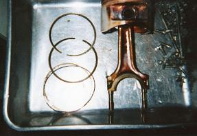
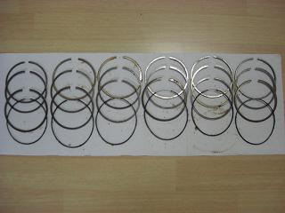
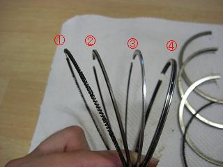
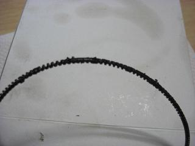
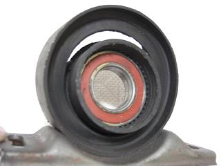
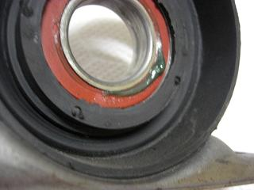

 OHといっても今回は、一番怪しそうなピストンリングの交換が主な作業 その中で交換が必要な箇所があれば随時交換することにした。 外れたピストンとピストンリング シリンダーには亀裂など見つからなかった＾＾/ カメラの調子が悪く、残っていた作業中の画像はこの１枚だけ＾＾；
|
 外したピストンリング 左から1番、2番、3番、4番、5番、6番
|
 １つのピストンに３本のリングがついている。 ?Aがトップリング?Bがセカンドリング この2つは、主にコンプレッションリングの役割を果たす。 ?@と?Cのリングがオイルリングで２つを組み合わせて１つのリングとして使う。 これは、シリンダー内壁のオイルを掻き落してオイルの消費を抑える。
|
 そのオイルリングを見てみると。。 ６気筒ともオイルのカスのようなものがこびりついていた。 これが全ての原因って訳ではないと思うが、、、 20万ｷﾛ走れば十分元は取れてるだろう＾＾/ OH後・・・ まだ慣らし中なので、3000回転以下しか回してませんが。。 何よりも驚いたのが、エンジンが凄くスムーズに回ること！ 今までは、アクセルの踏み具合に対して１テンポ遅れてどこか重く、ラフに回転が上昇していた。 こんなもんだろうと諦めていただけに思わぬ副産物だった。 それと、アクセルレスポンスが良くなりトルクがかなり増えたように思う。 （これについては、感覚だけでなく近いうちにシャーシダイナモで数値化したいと思う） オイルの減りは600キロ走った現在、気になるほどの減りはない。 完治したようだ＾＾/ でも、どこか納得できないなぁ。。 結局原因は何だったんだろう（?_?) |
番外編   MT化の時に交換したOEM品のセンターベアリング 半年でこの状態(-_-; 今回は純正品に交換。。 簡単に交換できない部品は信頼できる部品を使ったほうがいいなぁ・・・と思った。 |